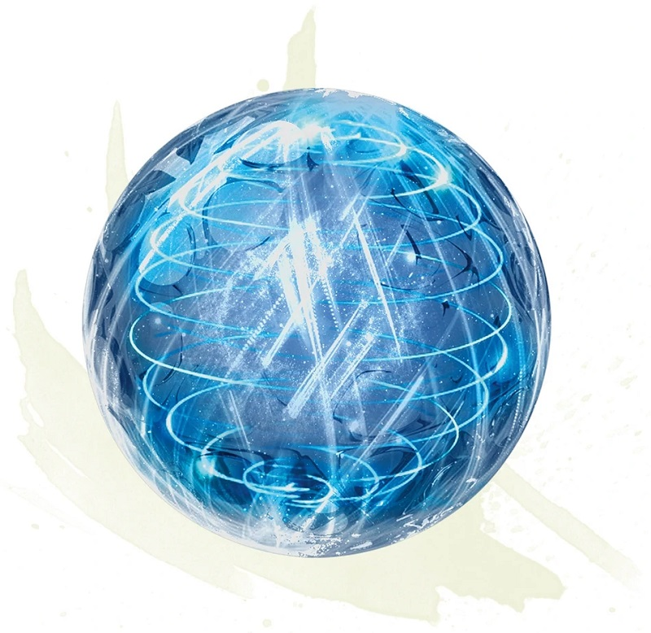

Driftglobe
[ Globe flottant ]
Wondrous item, uncommon
This small sphere of thick glass weighs 1 pound. If you are within 60 feet of it, you can speak its command word and cause it to emanate the light or daylight spell. Once used, the daylight effect can't be used again until the next dawn.
You can speak another command word as an action to make the illuminated globe rise into the air and float no more than 5 feet off the ground. The globe hovers in this way until you or another creature grasps it. If you move more than 60 feet from the hovering globe, it follows you until it is within 60 feet of you. It takes the shortest route to do so. If prevented from moving, the globe sinks gently to the ground and becomes inactive, and its light winks out.
You can speak another command word as an action to make the illuminated globe rise into the air and float no more than 5 feet off the ground. The globe hovers in this way until you or another creature grasps it. If you move more than 60 feet from the hovering globe, it follows you until it is within 60 feet of you. It takes the shortest route to do so. If prevented from moving, the globe sinks gently to the ground and becomes inactive, and its light winks out.
Dungeon Master´s Guide (BR)
